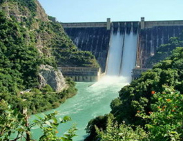
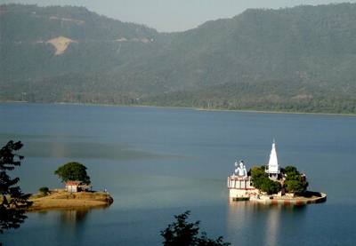
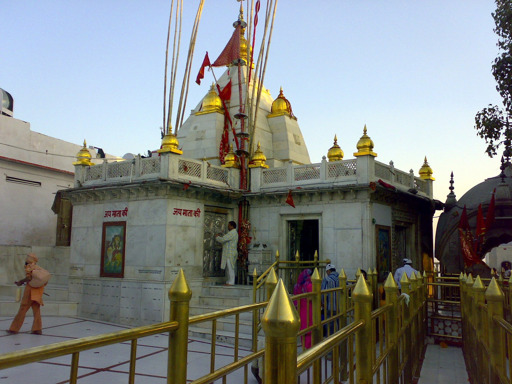

Bilaspur was the capital of a state of the same name founded in the 7th century, also known as Kahlur. The ruling dynasty were Chandela Rajputs, who claimed descent from the rulers of Chanderi in present-day Madhya Pradesh. The town of Bilaspur was founded in 1663. The state later became a princely state of British India, and was under the authority of the British province of Punjab. On 13 May 1665, Guru Tegh Bahadur went to Bilaspur to attend the mourning and funeral ceremonies for Raja Dip Chand of Bilaspur. Rani Champa of Bilaspur made an offer to the Guru of a piece of land in her state, which the Guru accepted at the cost of 500 rupees. The land consisted of the villages of Lodhipur, Mianpur, and Sahota. Guru Tegh Bahadur broke ground on a new settlement on 19 June 1665, which he named Nanaki after his mother. In 1932, the state became part of the newly created Punjab States Agency, and in 1936 the Punjab Hill States Agency was separated from the Punjab States Agency. On 12 October 1948 the local ruler, HH Raja Sir Anand Chand, acceded to the Government of India. Bilaspur became a separate state of India under a chief commissioner, and on 1 July 1954, Bilaspur State was made a district of Himachal Pradesh state by an act of the Indian Parliament. When the Sutlej River was dammed to create the Govind Sagar, the historic town of Bilaspur was submerged, and a new town was built upslope of the old.[1]
Bhakra Dam is a concrete gravity dam on the Satluj River in Bilaspur, Himachal Pradesh in northern India. The dam forms the Gobind Sagar reservoir. The dam, located at a gorge near the upstream Bhakra village in Bilaspur district of Himachal Pradesh of height 226 m. The length of the dam is 518.25 m and the width is 9.1 m. Its reservoir known as "Gobind Sagar" stores up to 9.34 billion cubic metres of water. The 90 km long reservoir created by the Bhakra Dam is spread over an area of 168.35 km2. In terms of quantity of water, it is the third largest reservoir in India, the first being in Madhya Pradesh with capacity of 12.22 billion cu m and second Nagarjunasagar Dam.
The dam, at 741 ft (226 m), is one of the highest gravity dams in the world (compared to USA's largest Hoover Dam at 743 ft). The 166 km² Gobindsagar Reservoir, named after Guru Gobind Singh, is created by this dam which is the third largest reservoir in India the first being Indira Sagar Dam and second Nagarjunasagar Dam. The river Satluj used to flow through a narrow gorge between two hills, Naina Devi ki dhar and Ramgarh ki dhar, and the site was chosen to dam the river.
.
.
.
Gobind Sagar is a man-made reservoir situated in Bilaspur District, Himachal Pradesh. It is formed by the Bhakra Dam. The reservoir is on the river Sutlej and is named in honour of Guru Gobind Singh, the tenth Sikh guru. One of the world's highest gravity dams, the Bhakra dam rises nearly 225.5 m above its lowest foundations. Under the supervision of the American dam-builder, Harvey Slocum, work began in the year of 1955 and was completed in 1962. To maintain the level of water, the flow of river Beas was channelized to Gobind Sagar by the Beas-Sutlej link which was accomplished in 1976.
The reservoir lies in the Bilaspur District and Una District. Bilaspur is about 91 km away from the Bhakra Dam. In October and November, when the water level of the reservoir is high, a series of regattas are also organised by the Tourism and Civil Aviation department. Water-skiing, sailing, kayaking and water scooter racing are popular water sports activities during this period.Major attractions of the lake include ferry rides and water sports like speedboating. Gobind Sagar was declared as a water fowl refuge in 1962. Fishing is commonly practiced here. It has about fifty one species and sub species. Labeo dero, Tor picturata, Mystus seenghala and Mirror carp are some of the common species found here.
The Temple of Shri Naina Devi Ji is situated on a hilltop, base of which also has samadhi of bhagat Jatt Jeona Morh, in the Bilaspur District of Himachal Pradesh in India. The temple is connected with National Highway No. 21. The temple at the top of the hill can be reached via road (that curves round the hill up to a certain point) and then by concrete steps (that finally reach the top). There is also a cable car facility that moves pilgrims from the base of the hill all the way to the top.
Shri Naina Devi Temple is also known as Mahishapeeth because of defeat of demon Mahishasur by the Goddess. According to the legends, Mahishasur was a powerful demon who was blessed by the boon of immortality by Lord Brahma, but the condition was that he could be defeated only by an unmarried woman. Due to this boon, Mahishasur started spreading terror on Earth and Gods. To cope with the demon, all Gods combined their powers and created a Devi to defeat him. The Devi was gifted different types of weapons by all Gods.